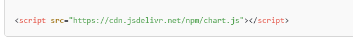
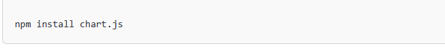

1- Qu’est-ce que Chart.js ?
Chart.js est une bibliothèque JavaScript gratuite qui permet de créer facilement des graphiques interactifs sur une page web. Elle utilise l’élément canvas de HTML5 pour afficher les données sous forme visuelle.C'est comme un dessin qui t’aide à comprendre des données facilement. C'est super utile quand tu veux expliquer ou montrer des choses comme des résultats de jeux, des températures, ou des ventes d’un magasin de manière visuelle et amusante
Origine et créateur
Chart.js a été créé en 2013 par Nick Downie pour proposer une alternative simple aux bibliothèques plus complexes comme D3.js. Aujourd’hui, elle est maintenue par une communauté de développeurs qui l’améliorent régulièrement.
2. Comment fonctionne Chart.js ?
Il existe deux principales méthodes pour intégrer Chart.js dans un projet web :
- Via un CDN :Si vous ne souhaitez pas télécharger et installer Chart.js localement, vous pouvez utiliser un CDN (Content Delivery Network). Il suffit d’ajouter cette ligne dans la balise de votre fichier HTML :

- Via un CDN :Via npm (pour les projets Node.js) : Si vous travaillez avec Node.js et un gestionnaire de paquets comme npm, vous pouvez installer Chart.js en exécutant la commande suivante :

Définir les données et les options.
Afficher le graphique avec JavaScript.
3- Méthode d'apprentissage de Chart.js ?
Voici quelques méthodes pour apprendre à utiliser Chart.js :
- Documentation officielle : La documentation officielle de Chart.js est le meilleur endroit pour commencer. Elle est claire, complète et offre des exemples pratiques pour chaque type de graphique et chaque fonctionnalité.
- Tutoriels en ligne :De nombreux tutoriels gratuits sur des sites comme MDN Web Docs, W3Schools, freeCodeCamp, et d'autres sites spécialisés dans le développement web peuvent vous aider à comprendre l’utilisation de Chart.js étape par étape.
- Pratique : La meilleure façon d'apprendre est de pratiquer. Créez différents types de graphiques (barres, camemberts, radars, etc.), ajoutez des animations, et personnalisez les options pour mieux comprendre comment Chart.js fonctionne.
- Exemples de projets : Recherchez des exemples de projets utilisant Chart.js sur des plateformes comme GitHub. Explorer des projets existants peut vous donner de l’inspiration et une meilleure compréhension des bonnes pratiques.
4- Exemples d’utilisation et cas concrets
- Tableau de bord interactif: Les entreprises utilisent Chart.js pour afficher des statistiques en temps réel sur des tableaux de bord interactifs.
- Visualisation des données en temps réel:Par exemple, dans la finance ou l’IoT (Internet des Objets), Chart.js permet d’afficher des données qui évoluent en direct.
- Application en finance, santé et e-commerce :
Finance : Suivi des prix d’actions ou de devises.
Santé : Visualisation des statistiques médicales (ex : nombre de patients).
E-commerce : Analyse des ventes pour prendre des décisions commerciales.
5-Avantages et limites de Chart.js
Avantages :
Gratuit et open source : Pas besoin de payer pour l’utiliser
Facilité d'utilisation : La bibliothèque est simple à intégrer et à utiliser, même pour les développeurs débutants.
Beau rendu graphique:Design moderne et animations fluides.
Flexibilité et personnalisation : Vous pouvez créer une grande variété de graphiques et les personnaliser selon vos besoins.
Performances :Chart.js est léger et rapide, même avec des jeux de données volumineux.
Interopérabilité :Chart.js fonctionne bien avec d'autres bibliothèques JavaScript, ce qui en fait un excellent choix pour des projets plus complexes.
limites :
Pas adapté aux très gros volumes de données: Peut ralentir si trop de données sont affichées.
Pas de support natif pour les graphiques 3D : Contrairement à certaines autres bibliothèques.
Moins puissant que D3.js : Limité pour les visualisations complexes.
Limitations dans certains types de graphiques : Bien que Chart.js offre une grande variété de graphiques, certaines visualisations plus complexes comme les graphiques en 3D ou les diagrammes très avancés, peuvent ne pas être bien supportées.
Problèmes de compatibilité :Parfois, certains navigateurs plus anciens peuvent ne pas bien rendre les graphiques, bien que cela soit de moins en moins un problème avec la modernisation des navigateurs.
Grande quantité de données :Chart.js peut rencontrer des problèmes de performance lorsqu'il s'agit de visualiser une grande quantité de données en raison du rendu graphique.
6-Évolutions récentes de Chart.js
Les dernières mises à jour apportent :
Meilleures animations: Graphiques plus fluides et interactifs.
Amélioration des légendes et étiquettes : Plus de clarté dans la lecture des données.
Optimisation des performances : Affichage plus rapide.
7- Conclusion
Chart.js est une solution simple et efficace pour intégrer des graphiques interactifs
dans un site web. Facile à utiliser, personnalisable et bien adapté aux petits et moyens
jeux de données, il permet de rendre les données plus visuelles et compréhensibles.
Malgré quelques limites, il reste un excellent choix pour la majorité des projets nécessitant des graphiques modernes et réactifs.